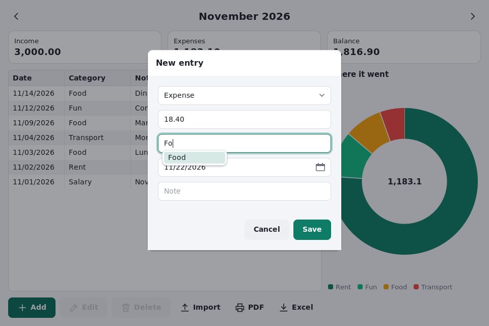

#16. Grids and dialogs
Pocket's window has its layout; now it needs its entries. This chapter fills the list, adds a dialog for one entry, and asks before deleting — the everyday work of a business app.
#The form's data
A form is a class (chapter 8), so it can keep fields of its own beside its controls. Pocket's main form keeps the store, the list of all entries, and the month shown:
THomeForm = class(THomeFormBase)
procedure FormCreate(Sender: TObject);
procedure ScreenChange(Sender: TObject);
procedure PrevClick(Sender: TObject);
procedure NextClick(Sender: TObject);
procedure EntriesChange(Sender: TObject);
procedure AddClick(Sender: TObject);
procedure EditClick(Sender: TObject);
procedure DeleteClick(Sender: TObject);
procedure PdfClick(Sender: TObject);
procedure ExcelClick(Sender: TObject);
procedure ImportClick(Sender: TObject);
private
FStore: TDbStore;
FEntries: TEntryList; { all of them; owns them }
FShown: TEntryList; { the month's, in the grid's order; does not own them }
FYear, FMonth: Word;
FEditing: TEntry; { the entry in the dialog; nil: a new one }
procedure ShowMonth;
function Selected: TEntry;
procedure EntryDone(Sender: TObject; AResult: Integer);
procedure DeleteAnswered(Sender: TObject; AResult: Integer);
procedure ExportMonth(const Ext: string);
procedure ExportTo(Sender: TObject; Ok: Boolean; const FileName: string);
procedure ImportChosen(Sender: TObject; Ok: Boolean; const FileName: string);
procedure ImportWork(Sender: TObject);
procedure ImportDone(Sender: TObject);
public
destructor Destroy; override;
end;
FormCreate (the form's OnCreate, when the form is made) opens the store and loads the entries; the destructor
frees what the form made, in the other order:
procedure THomeForm.FormCreate(Sender: TObject);
begin
FStore := TDbStore.Create(DatabaseUrl);
FEntries := TEntryList.Create;
FShown := TEntryList.Create(False);
FStore.Load(FEntries);
FYear := YearOf(Date);
FMonth := MonthOf(Date);
ShowMonth;
end;
destructor THomeForm.Destroy;
begin
FShown.Free;
FEntries.Free;
FStore.Free;
inherited Destroy;
end;
The store and DatabaseUrl are chapter 17's. Note TEntryList.Create(False): FShown holds the same entries as
FEntries but does not own them (chapter 10) — freeing it does not free them.
#TGrid
A TGrid shows rows and columns. Its columns are declared in the .pform (chapter 15 has Pocket's):
object AmountColumn: TGridColumn
Title = 'Amount'
Field = 'amount'
Kind = Money // Text, Number, Money, Date, Check, Icon
Width = 120 // 0: shares the room left
Alignment = Right
end
The rows are added in code, one array of strings each, in the columns' order:
Entries.Clear;
Entries.AddRow(['2026-11-03', 'Food', 'Lunch', '-12.5']);
A cell keeps its value as data: a date as 2026-11-03, an amount with a dot. The column's Kind decides how it
is shown — in the user's language (03.11.2026 and -12,50 in Turkish) — and how it sorts (as a date, as a
number). Never put a formatted text in a Money cell; give it the value.
Row |
the selected row (-1: none) |
RowCount, Cells[Col, Row] |
the rows, a cell's value |
RowSelect, Striped, Sortable, Editable |
whole rows selected, every other row shaded, a click on a title sorts, cells can be typed in |
OnChange |
the selection changed |
OnDblClick |
a double click (or Enter) on a row |
#Showing a month
ShowMonth puts the month on screen: the totals in the cards, the entries in the grid, the expenses in the chart
(chapter 18):
procedure THomeForm.ShowMonth;
var
S: TMonthSummary;
E: TEntry;
T: TCategoryTotal;
Labels: array of string;
Values: array of Double;
Month: TEntryList;
begin
MonthLabel.Text := MonthName(FMonth) + ' ' + IntToStr(FYear);
S := MonthSummary(FEntries, FYear, FMonth);
IncomeLabel.Text := Money(S.Income);
ExpenseLabel.Text := Money(S.Expenses);
BalanceLabel.Text := Money(S.Balance);
{ the grid: the month's entries, newest first }
FEntries.SortByDate;
Month := FEntries.InMonth(FYear, FMonth);
try
FShown.Clear;
Entries.Clear;
for E in Month do
begin
FShown.Add(E);
Entries.AddRow([DateToIso(E.Date), E.Category, E.Note, CurrToStr(E.SignedAmount, InvariantFormat)]);
end;
{ the chart: the month's expenses by category }
Labels := nil;
Values := nil;
for T in TotalsByCategory(Month, ekExpense) do
begin
SetLength(Labels, Length(Labels) + 1);
Labels[High(Labels)] := T.Category;
SetLength(Values, Length(Values) + 1);
Values[High(Values)] := T.Amount;
end;
finally
Month.Free;
end;
Spending.Clear;
if Length(Values) > 0 then
begin
Spending.SetLabels(Labels);
Spending.AddSeries(_('Expenses'), Values);
end;
EntriesChange(nil);
end;
CurrToStr(…, InvariantFormat) writes the amount with a dot whatever the language — the data form the grid wants.
#Which entry is selected?
The grid holds strings; the program needs the TEntry. FShown is a list of the entries in the same order as the
grid's rows, so row 3 is FShown[3]:
function THomeForm.Selected: TEntry;
begin
if (Entries.Row >= 0) and (Entries.Row < FShown.Count) then
Result := FShown[Entries.Row]
else
Result := nil;
end;
procedure THomeForm.EntriesChange(Sender: TObject);
begin
EditButton.Enabled := Selected <> nil;
DeleteButton.Enabled := Selected <> nil;
end;
EntriesChange runs when the selection changes (OnChange = EntriesChange in the .pform) and enables the
buttons that need a selected entry. ShowMonth calls it too, with nil as the Sender — a handler is an ordinary
method.
The arrows move between months:
procedure THomeForm.PrevClick(Sender: TObject);
begin
if FMonth = 1 then
begin
FMonth := 12;
Dec(FYear);
end
else
Dec(FMonth);
ShowMonth;
end;
#A dialog: one entry
Adding and changing an entry uses the same small form, EntryEditor:
// One entry, new or changed: shown with ShowModal over the main window.
object EntryForm: TEntryForm
Title = 'Entry'
Width = 380
Padding = 20
Gap = 10
object KindBox: TComboBox
Items = ('Expense', 'Income')
end
object AmountEdit: TCurrencyEdit
Placeholder = 'Amount'
end
object CategoryEdit: TEdit
Placeholder = 'Category: Food, Rent, Salary...'
end
object DateBox: TDatePicker
end
object NoteEdit: TEdit
Placeholder = 'Note'
end
object ErrorLabel: TLabel
Text = ''
Color = '#DC2626'
WordWrap = True
end
object EntryButtons: TRow
Gap = 8
Justify = End
object CancelButton: TButton
Text = 'Cancel'
Style = Secondary
Cancel = True
ModalResult = mrCancel
end
object OkButton: TButton
Text = 'Save'
Default = True
OnClick = OkClick
end
end
end

New controls here:
TComboBox |
a choice from a list: Items, ItemIndex (0 the first) |
TCurrencyEdit |
an amount: Value (a Currency), Valid (what was typed is an amount) — it reads 12,50 and 12.50 both |
TDatePicker |
a date with a calendar: Date, HasDate |
TEdit.Completions |
words offered while typing — here the categories used before |
Two buttons close the dialog. Cancel has ModalResult = mrCancel: a click closes it with that result, no code
needed. Cancel = True makes Escape press it, Default = True makes Enter press Save.
#The dialog's code
The dialog does not know about the store or the list. It gets an entry to show (Start), checks what was typed
(OkClick), and gives the values back (ReadInto):
type
TEntryForm = class(TEntryFormBase)
procedure OkClick(Sender: TObject);
public
{ Shows E's values (a new entry: today, an expense); Categories are
offered while the category is typed. }
procedure Start(E: TEntry; const Categories: array of string);
{ The values typed, into E (after the dialog closed with mrOk). }
procedure ReadInto(E: TEntry);
end;
procedure TEntryForm.OkClick(Sender: TObject);
begin
{ the checks: the dialog stays open with the reason }
if not AmountEdit.Valid or (AmountEdit.Value <= 0) then
begin
ErrorLabel.Text := _('Type an amount, like 12.50.');
AmountEdit.SetFocus;
Exit;
end;
if Trim(CategoryEdit.Text) = '' then
begin
ErrorLabel.Text := _('Every entry has a category.');
CategoryEdit.SetFocus;
Exit;
end;
if not DateBox.HasDate then
begin
ErrorLabel.Text := _('Choose the day.');
Exit;
end;
ModalResult := mrOk; { closes the dialog: Home's method gets mrOk }
end;
When something is wrong, the dialog says why and stays open, with the cursor in the field to fix. Only when all
is well does it set ModalResult := mrOk — which closes it.
A dialog that only does its own job can be used from anywhere: a second window, a test. That is the same rule as chapter 7's units: each part knows as little as it can.
#Showing it: ShowModal
if EntryForm.ShowModal = mrOk then ... // waits until it is closed
waits, as in Delphi — but phones cannot wait: an Android app must go back to the system while a dialog is open. So Pastel apps use the other form, which returns at once and calls a method when the dialog closes:
procedure THomeForm.AddClick(Sender: TObject);
var
E: TEntry;
begin
FEditing := nil;
E := TEntry.Create;
try
{ in the month shown: today, or its first day }
if (YearOf(Date) = FYear) and (MonthOf(Date) = FMonth) then
E.Date := Date
else
E.Date := EncodeDate(FYear, FMonth, 1);
EntryForm.Start(E, FEntries.Categories);
finally
E.Free;
end;
EntryForm.ShowModal(@EntryDone);
end;
procedure THomeForm.EditClick(Sender: TObject);
begin
FEditing := Selected;
if FEditing = nil then
Exit;
EntryForm.Start(FEditing, FEntries.Categories);
EntryForm.ShowModal(@EntryDone);
end;
@EntryDone is the method to call (a method pointer: its signature must be procedure (Sender: TObject; AResult: Integer)). The form remembers in FEditing what the dialog was opened for — nil for a new entry:
{ the dialog closed: saved (mrOk) or not }
procedure THomeForm.EntryDone(Sender: TObject; AResult: Integer);
var
E: TEntry;
begin
if AResult <> mrOk then
Exit;
if FEditing = nil then
begin
E := TEntry.Create;
FEntries.Add(E); { the list owns it from now on }
end
else
E := FEditing;
EntryForm.ReadInto(E);
FStore.Put(E); { a new one gets its id }
{ show the month of the entry }
FYear := YearOf(E.Date);
FMonth := MonthOf(E.Date);
ShowMonth;
end;
Note who owns what. A new TEntry goes into FEntries, which frees it at the end. In AddClick the temporary
entry only carries the starting values into the dialog, so it is freed at once — Start copied what it needed.
#Asking first
Deleting cannot be undone, so Pocket asks. Pastel.Dialogs has the usual messages, each in a form that waits and
one that does not:
| Waits | Does not wait |
|---|---|
ShowMessage(Msg) |
ShowMessage(Msg, @Done) |
if Ask(Msg) then |
Ask(Msg, @Answered) — gets mrYes or mrNo |
MessageDlg(Msg, Title, [mrOk, mrCancel]) |
MessageDlg(Msg, Title, Buttons, @Done) |
InputQuery(Title, Prompt, Value) |
InputQuery(Title, Prompt, Value, @Done) |
ShowToast('Saved') — a moment, no button |
procedure THomeForm.DeleteClick(Sender: TObject);
var
E: TEntry;
begin
E := Selected;
if E <> nil then
Ask(Format(_('Delete %s %s?'), [E.Category, Money(E.Amount)]), @DeleteAnswered);
end;
procedure THomeForm.DeleteAnswered(Sender: TObject; AResult: Integer);
var
E: TEntry;
begin
E := Selected;
if (AResult <> mrYes) or (E = nil) then
Exit;
FStore.Remove(E.Id);
FShown.Remove(E); { only the list: FShown does not own it }
FEntries.Remove(E); { this frees it }
ShowMonth;
end;
DeleteAnswered looks at Selected again instead of keeping the entry from DeleteClick: a lot can happen while a
question is open, and the safest answer is the one read now. The entry leaves FShown first (which does not free
it), then FEntries (which does).
The dialogs follow the platform's style (chapter 19): the buttons in Windows' order on Windows, Android's on Android.
#Exercises
- Show the number of entries of the month under the grid (
TLabel,FShown.Count). - Make the grid
Sortableand try it. Why doesSelectedstop working? (Hint: the order ofFShown.) Fix it with a hidden column that holds the entry'sId, and find the entry by it. - Add a Duplicate button that opens the dialog with the selected entry's values but saves a new entry.
- ★ Ask before closing the entry dialog with Cancel when something was typed (
OnCloseQuery).
Next: 17. A database